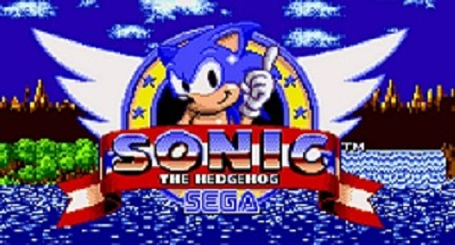
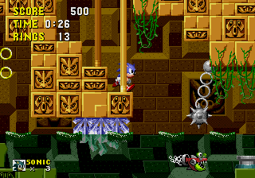
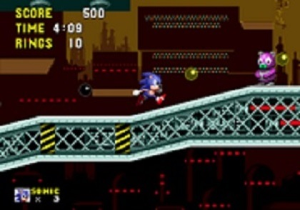

Le concept est simple, chaque mois un jeu retro est mis en avant sur notre site
Sonic the Hedgehog

Description du jeu

Sorti en 1991 sur Megadrive. Il s'agit du tout premier titre de la franchise. L’aventure
commence sur l’île de South Island où un scientifique fou, le Dr Ivo Robotnik capture des
animaux innocents pour les transformer en robots diaboliques. Pour les sauver un héros tenace
va tenter de stopper les plans du scientifique fou. Sonic, un petit hérisson bleu courant à
la vitesse du son parcourant, dans un temps imparti, tous les différents niveaux de ce jeu de
plateforme. Il y rencontre comme ennemis, les robots maléfiques créés par le docteur fou.
Pour l’aider dans sa quête, Sonic pourra se servir de différents items parsemés dans les
différents niveaux proposés. Parmi les items on peut y retrouver des anneaux devenus des icônes
des jeux Sonic qui lui permettront de résister aux coups et même gagner une vie.
Fonctionnalitées particulières

Si ce jeu vidéo a réussi à se démarquer des autres jeux vidéo sortis, c’est bien grâce à l’atout
principal du petit hérisson bleu, sa vitesse. Le gameplay était plus rapide que n’importe lequel
autre jeu sorti avant lui ce qui avait réussi à évoquer la surprise des joueurs lors de son lancement.
Une aussi grande vitesse n’a pu être possible que par le processeur Motorola 68 800 de la Méga Drive.
Sa capacité à traiter les numéros 16 bits et sa vitesse de base lui ont permis de surclasser sa prédécesseuse,
la Master System.
A propos de nous :
Bienvenue sur notre paradis pour les amateurs de jeux vidéo rétro ! Notre site est bien plus qu'une
simple vitrine de pixels nostalgiques, c'est un voyage captivant à travers l'âge d'or des jeux vidéo. Plongez dans nos
explications détaillées, où chaque jeu rétro est décortiqué et décrit avec amour. Explorez nos pages dédiées,
chacune orchestrée par un passionné, et laissez-vous emporter par nos récits. Entre animations ludiques, clins d'œil aux
classiques et conseils avisés, notre site est bien plus qu'une simple page web : c'est une aventure interactive qui vous
attend. Préparez-vous à un plongeon dans l'univers rétro des jeux vidéo, où chaque clic vous rapproche d'un souvenir, d'un
conseil précieux et d'une touche de magie pixelisée. Alors, que l'aventure commence !
Notre sélection de sites portant sur les jeux rétro :